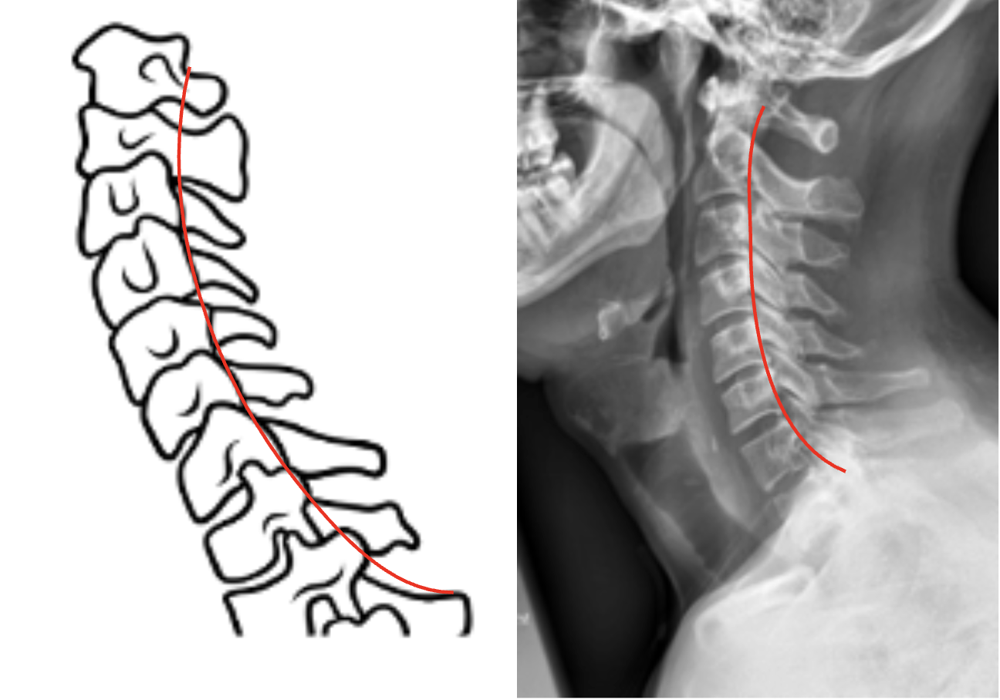

1) Description of Measurement
George’s Line, also known as the Posterior Cervical Line, is a radiographic alignment assessment tool used to evaluate sagittal continuity of the cervical vertebral column.
It is drawn along the posterior vertebral body margins on a lateral cervical spine X-ray, and should form a smooth, continuous curve from C2 through C7.
Disruption or step-off of this line suggests subluxation, dislocation, fracture, or instability—most often due to trauma, degenerative spondylolisthesis, or ligamentous injury.
George’s line is a quick and reliable screening measure for malalignment and instability in the cervical spine.
2) Instructions to Measure
3) Normal vs. Pathologic Ranges
4) Important References
White AA, Panjabi MM. Clinical Biomechanics of the Spine. 2nd ed. Philadelphia, PA: Lippincott; 1990.
Harris JH Jr, Edeiken-Monroe B. The Radiology of Emergency Medicine. 3rd ed. Baltimore: Williams & Wilkins; 1993.
Swartz EE, Floyd RT, Cendoma M. Cervical spine functional anatomy and the biomechanics of injury due to compressive loading. J Athl Train. 2005 Jul-Sep;40(3):155-61.
Daffner RH, Deeb ZL, Rothfus WE. The posterior vertebral body line: importance in the detection of burst fractures. AJR Am J Roentgenol. 1987 Jan;148(1):93-6. doi: 10.2214/ajr.148.1.93.
5) Other info....
George’s Line serves as a quick screening tool for detecting subtle misalignments that may be missed on casual inspection.
It is best visualized on a true lateral radiograph, ensure the patient’s shoulders are depressed and the head is neutral.
Disruptions can indicate:
Should be assessed in conjunction with posterior spinolaminar line and anterior vertebral body line for a complete evaluation of sagittal integrity.
CT or MRI should follow if a step-off or discontinuity is noted to assess for fracture or ligamentous damage.